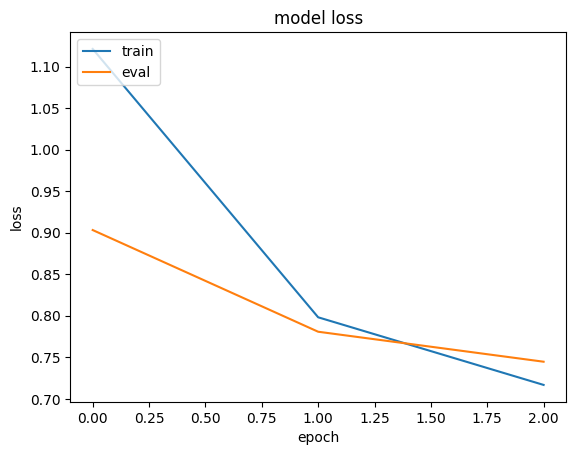
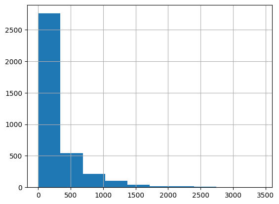
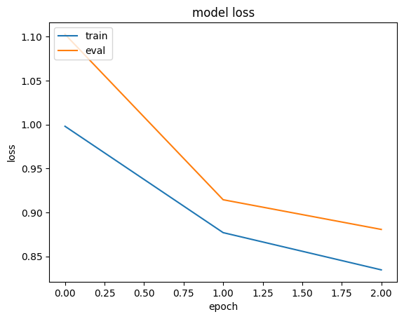

Memory-efficient embeddings for recommendation systems
Author: Khalid Salama
Date created: 2021/02/15
Last modified: 2023/11/15
Description: Using compositional & mixed-dimension embeddings for memory-efficient recommendation models.

Introduction
This example demonstrates two techniques for building memory-efficient recommendation models by reducing the size of the embedding tables, without sacrificing model effectiveness:
- Quotient-remainder trick, by Hao-Jun Michael Shi et al., which reduces the number of embedding vectors to store, yet produces unique embedding vector for each item without explicit definition.
- Mixed Dimension embeddings, by Antonio Ginart et al., which stores embedding vectors with mixed dimensions, where less popular items have reduced dimension embeddings.
We use the 1M version of the Movielens dataset. The dataset includes around 1 million ratings from 6,000 users on 4,000 movies.
Setup
import os
os.environ["KERAS_BACKEND"] = "tensorflow"
from zipfile import ZipFile
from urllib.request import urlretrieve
import numpy as np
import pandas as pd
import tensorflow as tf
import keras
from keras import layers
from keras.layers import StringLookup
import matplotlib.pyplot as plt
Prepare the data
Download and process data
urlretrieve("http://files.grouplens.org/datasets/movielens/ml-1m.zip", "movielens.zip")
ZipFile("movielens.zip", "r").extractall()
ratings_data = pd.read_csv(
"ml-1m/ratings.dat",
sep="::",
names=["user_id", "movie_id", "rating", "unix_timestamp"],
)
ratings_data["movie_id"] = ratings_data["movie_id"].apply(lambda x: f"movie_{x}")
ratings_data["user_id"] = ratings_data["user_id"].apply(lambda x: f"user_{x}")
ratings_data["rating"] = ratings_data["rating"].apply(lambda x: float(x))
del ratings_data["unix_timestamp"]
print(f"Number of users: {len(ratings_data.user_id.unique())}")
print(f"Number of movies: {len(ratings_data.movie_id.unique())}")
print(f"Number of ratings: {len(ratings_data.index)}")
/var/folders/8n/8w8cqnvj01xd4ghznl11nyn000_93_/T/ipykernel_33554/2288473197.py:4: ParserWarning: Falling back to the 'python' engine because the 'c' engine does not support regex separators (separators > 1 char and different from '\s+' are interpreted as regex); you can avoid this warning by specifying engine='python'.
ratings_data = pd.read_csv(
Number of users: 6040
Number of movies: 3706
Number of ratings: 1000209
Create train and eval data splits
random_selection = np.random.rand(len(ratings_data.index)) <= 0.85
train_data = ratings_data[random_selection]
eval_data = ratings_data[~random_selection]
train_data.to_csv("train_data.csv", index=False, sep="|", header=False)
eval_data.to_csv("eval_data.csv", index=False, sep="|", header=False)
print(f"Train data split: {len(train_data.index)}")
print(f"Eval data split: {len(eval_data.index)}")
print("Train and eval data files are saved.")
Train data split: 850573
Eval data split: 149636
Train and eval data files are saved.
Define dataset metadata and hyperparameters
csv_header = list(ratings_data.columns)
user_vocabulary = list(ratings_data.user_id.unique())
movie_vocabulary = list(ratings_data.movie_id.unique())
target_feature_name = "rating"
learning_rate = 0.001
batch_size = 128
num_epochs = 3
base_embedding_dim = 64
Train and evaluate the model
def get_dataset_from_csv(csv_file_path, batch_size=128, shuffle=True):
return tf.data.experimental.make_csv_dataset(
csv_file_path,
batch_size=batch_size,
column_names=csv_header,
label_name=target_feature_name,
num_epochs=1,
header=False,
field_delim="|",
shuffle=shuffle,
)
def run_experiment(model):
# Compile the model.
model.compile(
optimizer=keras.optimizers.Adam(learning_rate),
loss=keras.losses.MeanSquaredError(),
metrics=[keras.metrics.MeanAbsoluteError(name="mae")],
)
# Read the training data.
train_dataset = get_dataset_from_csv("train_data.csv", batch_size)
# Read the test data.
eval_dataset = get_dataset_from_csv("eval_data.csv", batch_size, shuffle=False)
# Fit the model with the training data.
history = model.fit(
train_dataset,
epochs=num_epochs,
validation_data=eval_dataset,
)
return history
Experiment 1: baseline collaborative filtering model
Implement embedding encoder
def embedding_encoder(vocabulary, embedding_dim, num_oov_indices=0, name=None):
return keras.Sequential(
[
StringLookup(
vocabulary=vocabulary, mask_token=None, num_oov_indices=num_oov_indices
),
layers.Embedding(
input_dim=len(vocabulary) + num_oov_indices, output_dim=embedding_dim
),
],
name=f"{name}_embedding" if name else None,
)
Implement the baseline model
def create_baseline_model():
# Receive the user as an input.
user_input = layers.Input(name="user_id", shape=(), dtype=tf.string)
# Get user embedding.
user_embedding = embedding_encoder(
vocabulary=user_vocabulary, embedding_dim=base_embedding_dim, name="user"
)(user_input)
# Receive the movie as an input.
movie_input = layers.Input(name="movie_id", shape=(), dtype=tf.string)
# Get embedding.
movie_embedding = embedding_encoder(
vocabulary=movie_vocabulary, embedding_dim=base_embedding_dim, name="movie"
)(movie_input)
# Compute dot product similarity between user and movie embeddings.
logits = layers.Dot(axes=1, name="dot_similarity")(
[user_embedding, movie_embedding]
)
# Convert to rating scale.
prediction = keras.activations.sigmoid(logits) * 5
# Create the model.
model = keras.Model(
inputs=[user_input, movie_input], outputs=prediction, name="baseline_model"
)
return model
baseline_model = create_baseline_model()
baseline_model.summary()
/Users/fchollet/Library/Python/3.10/lib/python/site-packages/numpy/core/numeric.py:2468: FutureWarning: elementwise comparison failed; returning scalar instead, but in the future will perform elementwise comparison
return bool(asarray(a1 == a2).all())
Model: "baseline_model"
┏━━━━━━━━━━━━━━━━━━━━━┳━━━━━━━━━━━━━━━━━━━┳━━━━━━━━━┳━━━━━━━━━━━━━━━━━━━━━━┓ ┃ Layer (type) ┃ Output Shape ┃ Param # ┃ Connected to ┃ ┡━━━━━━━━━━━━━━━━━━━━━╇━━━━━━━━━━━━━━━━━━━╇━━━━━━━━━╇━━━━━━━━━━━━━━━━━━━━━━┩ │ user_id │ (None) │ 0 │ - │ │ (InputLayer) │ │ │ │ ├─────────────────────┼───────────────────┼─────────┼──────────────────────┤ │ movie_id │ (None) │ 0 │ - │ │ (InputLayer) │ │ │ │ ├─────────────────────┼───────────────────┼─────────┼──────────────────────┤ │ user_embedding │ (None, 64) │ 386,560 │ user_id[0][0] │ │ (Sequential) │ │ │ │ ├─────────────────────┼───────────────────┼─────────┼──────────────────────┤ │ movie_embedding │ (None, 64) │ 237,184 │ movie_id[0][0] │ │ (Sequential) │ │ │ │ ├─────────────────────┼───────────────────┼─────────┼──────────────────────┤ │ dot_similarity │ (None, 1) │ 0 │ user_embedding[0][0… │ │ (Dot) │ │ │ movie_embedding[0][… │ ├─────────────────────┼───────────────────┼─────────┼──────────────────────┤ │ sigmoid (Sigmoid) │ (None, 1) │ 0 │ dot_similarity[0][0] │ ├─────────────────────┼───────────────────┼─────────┼──────────────────────┤ │ multiply (Multiply) │ (None, 1) │ 0 │ sigmoid[0][0] │ └─────────────────────┴───────────────────┴─────────┴──────────────────────┘
Total params: 623,744 (2.38 MB)
Trainable params: 623,744 (2.38 MB)
Non-trainable params: 0 (0.00 B)
Notice that the number of trainable parameters is 623,744
history = run_experiment(baseline_model)
plt.plot(history.history["loss"])
plt.plot(history.history["val_loss"])
plt.title("model loss")
plt.ylabel("loss")
plt.xlabel("epoch")
plt.legend(["train", "eval"], loc="upper left")
plt.show()
Epoch 1/3
6629/Unknown 17s 3ms/step - loss: 1.4095 - mae: 0.9668
/Library/Frameworks/Python.framework/Versions/3.10/lib/python3.10/contextlib.py:153: UserWarning: Your input ran out of data; interrupting training. Make sure that your dataset or generator can generate at least `steps_per_epoch * epochs` batches. You may need to use the `.repeat()` function when building your dataset.
self.gen.throw(typ, value, traceback)
6646/6646 ━━━━━━━━━━━━━━━━━━━━ 18s 3ms/step - loss: 1.4087 - mae: 0.9665 - val_loss: 0.9032 - val_mae: 0.7438
Epoch 2/3
6646/6646 ━━━━━━━━━━━━━━━━━━━━ 17s 3ms/step - loss: 0.8296 - mae: 0.7193 - val_loss: 0.7807 - val_mae: 0.6976
Epoch 3/3
6646/6646 ━━━━━━━━━━━━━━━━━━━━ 17s 3ms/step - loss: 0.7305 - mae: 0.6744 - val_loss: 0.7446 - val_mae: 0.6808

Experiment 2: memory-efficient model
Implement Quotient-Remainder embedding as a layer
The Quotient-Remainder technique works as follows. For a set of vocabulary and embedding size
embedding_dim, instead of creating a vocabulary_size X embedding_dim embedding table,
we create two num_buckets X embedding_dim embedding tables, where num_buckets
is much smaller than vocabulary_size.
An embedding for a given item index is generated via the following steps:
- Compute the
quotient_indexasindex // num_buckets. - Compute the
remainder_indexasindex % num_buckets. - Lookup
quotient_embeddingfrom the first embedding table usingquotient_index. - Lookup
remainder_embeddingfrom the second embedding table usingremainder_index. - Return
quotient_embedding*remainder_embedding.
This technique not only reduces the number of embedding vectors needs to be stored and trained,
but also generates a unique embedding vector for each item of size embedding_dim.
Note that q_embedding and r_embedding can be combined using other operations,
like Add and Concatenate.
class QREmbedding(keras.layers.Layer):
def __init__(self, vocabulary, embedding_dim, num_buckets, name=None):
super().__init__(name=name)
self.num_buckets = num_buckets
self.index_lookup = StringLookup(
vocabulary=vocabulary, mask_token=None, num_oov_indices=0
)
self.q_embeddings = layers.Embedding(
num_buckets,
embedding_dim,
)
self.r_embeddings = layers.Embedding(
num_buckets,
embedding_dim,
)
def call(self, inputs):
# Get the item index.
embedding_index = self.index_lookup(inputs)
# Get the quotient index.
quotient_index = tf.math.floordiv(embedding_index, self.num_buckets)
# Get the reminder index.
remainder_index = tf.math.floormod(embedding_index, self.num_buckets)
# Lookup the quotient_embedding using the quotient_index.
quotient_embedding = self.q_embeddings(quotient_index)
# Lookup the remainder_embedding using the remainder_index.
remainder_embedding = self.r_embeddings(remainder_index)
# Use multiplication as a combiner operation
return quotient_embedding * remainder_embedding
Implement Mixed Dimension embedding as a layer
In the mixed dimension embedding technique, we train embedding vectors with full dimensions for the frequently queried items, while train embedding vectors with reduced dimensions for less frequent items, plus a projection weights matrix to bring low dimension embeddings to the full dimensions.
More precisely, we define blocks of items of similar frequencies. For each block,
a block_vocab_size X block_embedding_dim embedding table and block_embedding_dim X full_embedding_dim
projection weights matrix are created. Note that, if block_embedding_dim equals full_embedding_dim,
the projection weights matrix becomes an identity matrix. Embeddings for a given batch of item
indices are generated via the following steps:
- For each block, lookup the
block_embedding_dimembedding vectors usingindices, and project them to thefull_embedding_dim. - If an item index does not belong to a given block, an out-of-vocabulary embedding is returned.
Each block will return a
batch_size X full_embedding_dimtensor. - A mask is applied to the embeddings returned from each block in order to convert the out-of-vocabulary embeddings to vector of zeros. That is, for each item in the batch, a single non-zero embedding vector is returned from the all block embeddings.
- Embeddings retrieved from the blocks are combined using sum to produce the final
batch_size X full_embedding_dimtensor.
class MDEmbedding(keras.layers.Layer):
def __init__(
self, blocks_vocabulary, blocks_embedding_dims, base_embedding_dim, name=None
):
super().__init__(name=name)
self.num_blocks = len(blocks_vocabulary)
# Create vocab to block lookup.
keys = []
values = []
for block_idx, block_vocab in enumerate(blocks_vocabulary):
keys.extend(block_vocab)
values.extend([block_idx] * len(block_vocab))
self.vocab_to_block = tf.lookup.StaticHashTable(
tf.lookup.KeyValueTensorInitializer(keys, values), default_value=-1
)
self.block_embedding_encoders = []
self.block_embedding_projectors = []
# Create block embedding encoders and projectors.
for idx in range(self.num_blocks):
vocabulary = blocks_vocabulary[idx]
embedding_dim = blocks_embedding_dims[idx]
block_embedding_encoder = embedding_encoder(
vocabulary, embedding_dim, num_oov_indices=1
)
self.block_embedding_encoders.append(block_embedding_encoder)
if embedding_dim == base_embedding_dim:
self.block_embedding_projectors.append(layers.Lambda(lambda x: x))
else:
self.block_embedding_projectors.append(
layers.Dense(units=base_embedding_dim)
)
def call(self, inputs):
# Get block index for each input item.
block_indicies = self.vocab_to_block.lookup(inputs)
# Initialize output embeddings to zeros.
embeddings = tf.zeros(shape=(tf.shape(inputs)[0], base_embedding_dim))
# Generate embeddings from blocks.
for idx in range(self.num_blocks):
# Lookup embeddings from the current block.
block_embeddings = self.block_embedding_encoders[idx](inputs)
# Project embeddings to base_embedding_dim.
block_embeddings = self.block_embedding_projectors[idx](block_embeddings)
# Create a mask to filter out embeddings of items that do not belong to the current block.
mask = tf.expand_dims(tf.cast(block_indicies == idx, tf.dtypes.float32), 1)
# Set the embeddings for the items not belonging to the current block to zeros.
block_embeddings = block_embeddings * mask
# Add the block embeddings to the final embeddings.
embeddings += block_embeddings
return embeddings
Implement the memory-efficient model
In this experiment, we are going to use the Quotient-Remainder technique to reduce the size of the user embeddings, and the Mixed Dimension technique to reduce the size of the movie embeddings.
While in the paper, an alpha-power rule is used to determined the dimensions of the embedding of each block, we simply set the number of blocks and the dimensions of embeddings of each block based on the histogram visualization of movies popularity.
movie_frequencies = ratings_data["movie_id"].value_counts()
movie_frequencies.hist(bins=10)
<Axes: >

You can see that we can group the movies into three blocks, and assign them 64, 32, and 16 embedding dimensions, respectively. Feel free to experiment with different number of blocks and dimensions.
sorted_movie_vocabulary = list(movie_frequencies.keys())
movie_blocks_vocabulary = [
sorted_movie_vocabulary[:400], # high popularity movies block
sorted_movie_vocabulary[400:1700], # normal popularity movies block
sorted_movie_vocabulary[1700:], # low popularity movies block
]
movie_blocks_embedding_dims = [64, 32, 16]
user_embedding_num_buckets = len(user_vocabulary) // 50
def create_memory_efficient_model():
# Take the user as an input.
user_input = layers.Input(name="user_id", shape=(), dtype="string")
# Get user embedding.
user_embedding = QREmbedding(
vocabulary=user_vocabulary,
embedding_dim=base_embedding_dim,
num_buckets=user_embedding_num_buckets,
name="user_embedding",
)(user_input)
# Take the movie as an input.
movie_input = layers.Input(name="movie_id", shape=(), dtype="string")
# Get embedding.
movie_embedding = MDEmbedding(
blocks_vocabulary=movie_blocks_vocabulary,
blocks_embedding_dims=movie_blocks_embedding_dims,
base_embedding_dim=base_embedding_dim,
name="movie_embedding",
)(movie_input)
# Compute dot product similarity between user and movie embeddings.
logits = layers.Dot(axes=1, name="dot_similarity")(
[user_embedding, movie_embedding]
)
# Convert to rating scale.
prediction = keras.activations.sigmoid(logits) * 5
# Create the model.
model = keras.Model(
inputs=[user_input, movie_input], outputs=prediction, name="baseline_model"
)
return model
memory_efficient_model = create_memory_efficient_model()
memory_efficient_model.summary()
/Users/fchollet/Library/Python/3.10/lib/python/site-packages/numpy/core/numeric.py:2468: FutureWarning: elementwise comparison failed; returning scalar instead, but in the future will perform elementwise comparison
return bool(asarray(a1 == a2).all())
Model: "baseline_model"
┏━━━━━━━━━━━━━━━━━━━━━┳━━━━━━━━━━━━━━━━━━━┳━━━━━━━━━┳━━━━━━━━━━━━━━━━━━━━━━┓ ┃ Layer (type) ┃ Output Shape ┃ Param # ┃ Connected to ┃ ┡━━━━━━━━━━━━━━━━━━━━━╇━━━━━━━━━━━━━━━━━━━╇━━━━━━━━━╇━━━━━━━━━━━━━━━━━━━━━━┩ │ user_id │ (None) │ 0 │ - │ │ (InputLayer) │ │ │ │ ├─────────────────────┼───────────────────┼─────────┼──────────────────────┤ │ movie_id │ (None) │ 0 │ - │ │ (InputLayer) │ │ │ │ ├─────────────────────┼───────────────────┼─────────┼──────────────────────┤ │ user_embedding │ (None, 64) │ 15,360 │ user_id[0][0] │ │ (QREmbedding) │ │ │ │ ├─────────────────────┼───────────────────┼─────────┼──────────────────────┤ │ movie_embedding │ (None, 64) │ 102,608 │ movie_id[0][0] │ │ (MDEmbedding) │ │ │ │ ├─────────────────────┼───────────────────┼─────────┼──────────────────────┤ │ dot_similarity │ (None, 1) │ 0 │ user_embedding[0][0… │ │ (Dot) │ │ │ movie_embedding[0][… │ ├─────────────────────┼───────────────────┼─────────┼──────────────────────┤ │ sigmoid_1 (Sigmoid) │ (None, 1) │ 0 │ dot_similarity[0][0] │ ├─────────────────────┼───────────────────┼─────────┼──────────────────────┤ │ multiply_1 │ (None, 1) │ 0 │ sigmoid_1[0][0] │ │ (Multiply) │ │ │ │ └─────────────────────┴───────────────────┴─────────┴──────────────────────┘
Total params: 117,968 (460.81 KB)
Trainable params: 117,968 (460.81 KB)
Non-trainable params: 0 (0.00 B)
Notice that the number of trainable parameters is 117,968, which is more than 5x less than the number of parameters in the baseline model.
history = run_experiment(memory_efficient_model)
plt.plot(history.history["loss"])
plt.plot(history.history["val_loss"])
plt.title("model loss")
plt.ylabel("loss")
plt.xlabel("epoch")
plt.legend(["train", "eval"], loc="upper left")
plt.show()
Epoch 1/3
6622/Unknown 6s 891us/step - loss: 1.1938 - mae: 0.8780
/Library/Frameworks/Python.framework/Versions/3.10/lib/python3.10/contextlib.py:153: UserWarning: Your input ran out of data; interrupting training. Make sure that your dataset or generator can generate at least `steps_per_epoch * epochs` batches. You may need to use the `.repeat()` function when building your dataset.
self.gen.throw(typ, value, traceback)
6646/6646 ━━━━━━━━━━━━━━━━━━━━ 7s 992us/step - loss: 1.1931 - mae: 0.8777 - val_loss: 1.1027 - val_mae: 0.8179
Epoch 2/3
6646/6646 ━━━━━━━━━━━━━━━━━━━━ 7s 1ms/step - loss: 0.8908 - mae: 0.7488 - val_loss: 0.9144 - val_mae: 0.7549
Epoch 3/3
6646/6646 ━━━━━━━━━━━━━━━━━━━━ 7s 980us/step - loss: 0.8419 - mae: 0.7278 - val_loss: 0.8806 - val_mae: 0.7419
